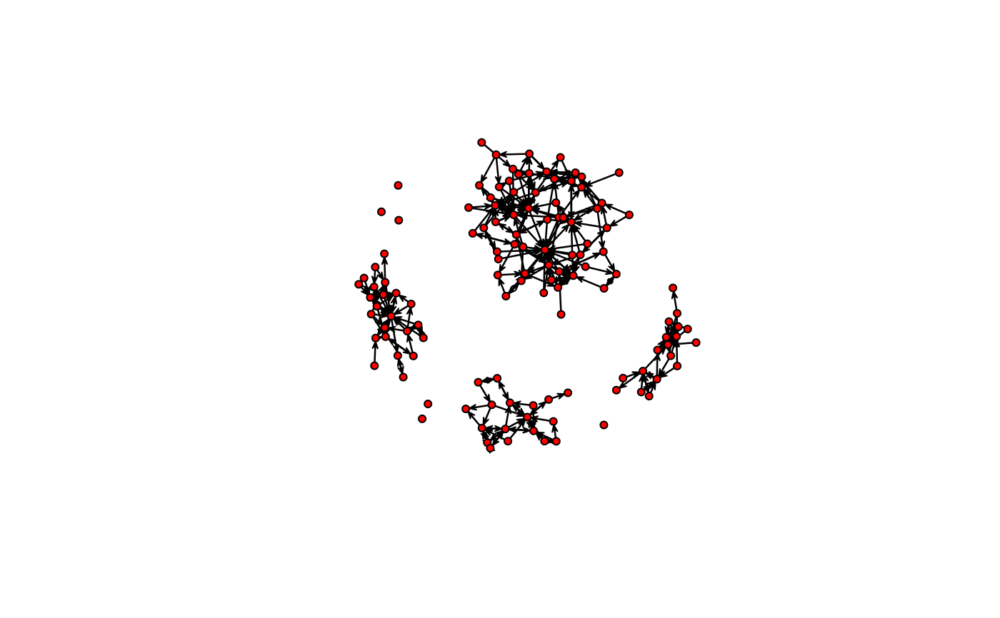

R/RcppExports.R
edges_coords.RdGiven a graph, vertices' positions and sizes, calculates the absolute positions of the endpoints of the edges considering the plot's aspect ratio.
edges_coords(graph, toa, x, y, vertex_cex, undirected = TRUE, no_contemporary = TRUE, dev = as.numeric(c()), ran = as.numeric(c()), curved = as.logical(c()))
| graph | A square matrix of size \(n\). Adjacency matrix. |
|---|---|
| toa | Integer vector of size \(n\). Times of adoption. |
| x | Numeric vector of size \(n\). x-coordinta of vertices. |
| y | Numeric vector of size \(n\). y-coordinta of vertices. |
| vertex_cex | Numeric vector of size \(n\). Vertices' sizes in terms
of the x-axis (see |
| undirected | Logical scalar. Whether the graph is undirected or not. |
| no_contemporary | Logical scalar. Whether to return (compute) edges' coordiantes for vertices with the same time of adoption (see details). |
| dev | Numeric vector of size 2. Height and width of the device (see details). |
| ran | Numeric vector of size 2. Range of the x and y axis (see details). |
| curved | Logical vector. |
A numeric matrix of size \(m\times 5\) with the following columns:
Edge origin
Edge target
Relative angle between (x0,y0) and (x1,y1) in terms
of radians
In order to make the plot's visualization more appealing, this function provides a straight forward way of computing the tips of the edges considering the aspect ratio of the axes range. In particular, the following corrections are made at the moment of calculating the egdes coords:
Instead of using the actual distance between ego and alter, a relative one is calculated as follows $$d'=\left[(x_0-x_1)^2 + (y_0' - y_1')^2\right]^\frac{1}{2}$$ where \(% y_i'=y_i\times\frac{\max x - \min x}{\max y - \min y} \)
Then, for the relative elevation angle, alpha, the relative distance \(d'\)
is used, \(\alpha'=\arccos\left( (x_0 - x_1)/d' \right)\)
Finally, the edge's endpoint's (alter) coordinates are computed as follows: $$% x_1' = x_1 + \cos(\alpha')\times v_1$$ $$% y_1' = y_1 -+ \sin(\alpha')\times v_1 \times\frac{\max y - \min y}{\max x - \min x} $$ Where \(v_1\) is alter's size in terms of the x-axis, and the sign of the second term in \(y_1'\) is negative iff \(y_0 < y_1\).
The same process (with sign inverted) is applied to the edge starting piont.
The resulting values, \(x_1',y_1'\) can be used with the function
arrows. This is the workhorse function used in plot_threshold.
The dev argument provides a reference to rescale the plot accordingly
to the device, and former, considering the size of the margins as well (this
can be easily fetched via par("pin"), plot area in inches).
On the other hand, ran provides a reference for the adjustment
according to the range of the data, this is range(x)[2] - range(x)[1]
and range(y)[2] - range(y)[1] respectively.
# -------------------------------------------------------------------------- data(medInnovationsDiffNet) library(sna)#>#> #>#> #> #>#>#> #> #> #> #> #> #> #> #>#> #>#> #> #> #> #> #>#> #> #> #> #>#> #>#> #> #> #># Computing coordinates set.seed(79) coords <- sna::gplot(as.matrix(medInnovationsDiffNet$graph[[1]]))# Getting edge coordinates vcex <- rep(1.5, nnodes(medInnovationsDiffNet)) ecoords <- edges_coords( medInnovationsDiffNet$graph[[1]], diffnet.toa(medInnovationsDiffNet), x = coords[,1], y = coords[,2], vertex_cex = vcex, dev = par("pin") ) ecoords <- as.data.frame(ecoords) # Plotting symbols(coords[,1], coords[,2], circles=vcex, inches=FALSE, xaxs="i", yaxs="i")with(ecoords, arrows(x0,y0,x1,y1, length=.1))